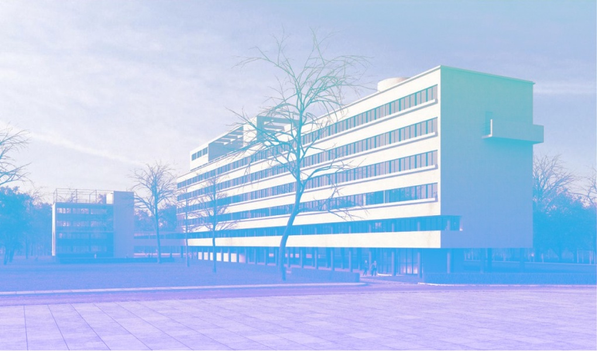

Дом Наркомфина — один из знаковых памятников архитектуры советского авангарда и конструктивизма. Построен в 1928–1930 годах по проекту архитекторов Моисея Гинзбурга, Игнатия Милиниса и инженера Сергея Прохорова для работников Народного комиссариата финансов СССР.
Автор замысла дома Наркомфина М. Я. Гинзбург определял его как «опытный дом переходного типа».
Дом находится в Москве по адресу: Новинский бульвар, дом 25, корпус 1.
С 1980-х годов дом находился в аварийном состоянии. В 2016–2020 годах дом был отреставрирован по проекту архитектурного бюро «Гинзбург Архитектс». Сейчас Дом Наркомфина — и памятник архитектуры, и жилой дом.
В проектной документации дом именовался 2-м домом СНК. Согласно проекту, комплекс должен был состоять из четырёх корпусов:

>Материал взят из статьи «Дом Наркомфина» в Википедии .